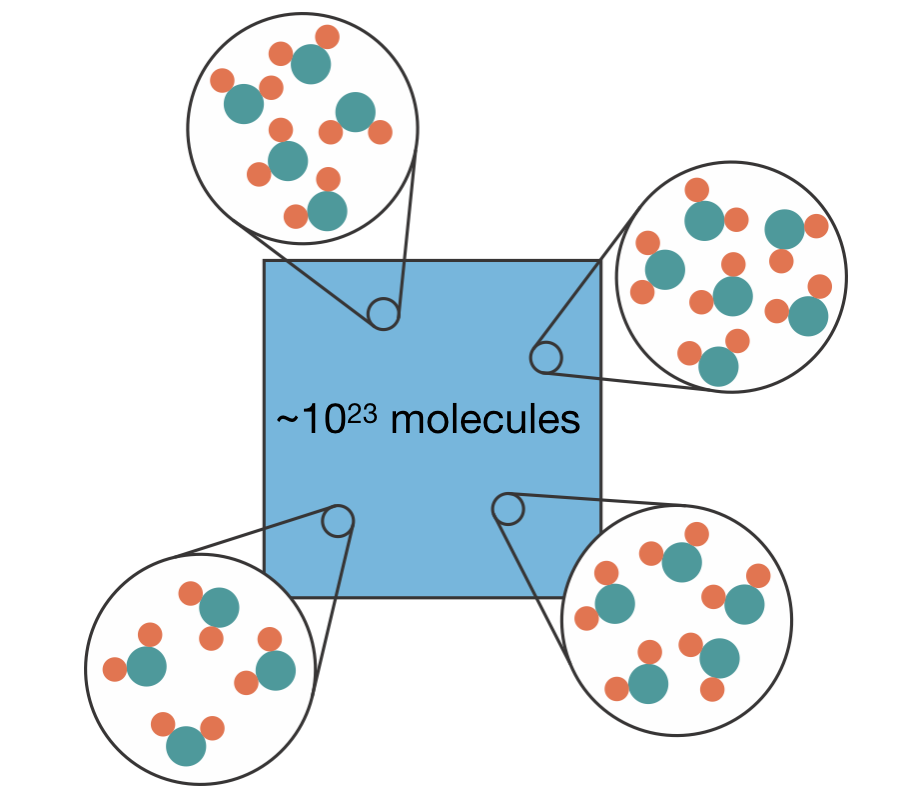
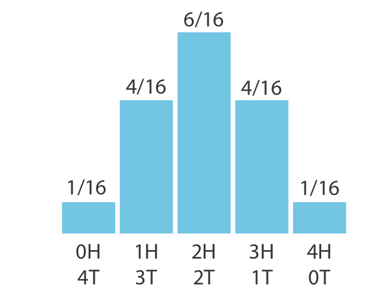
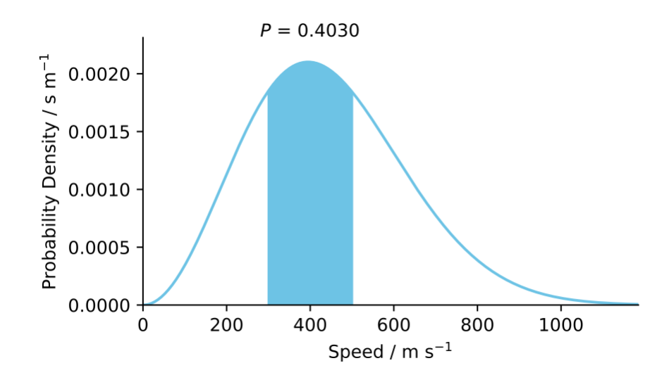
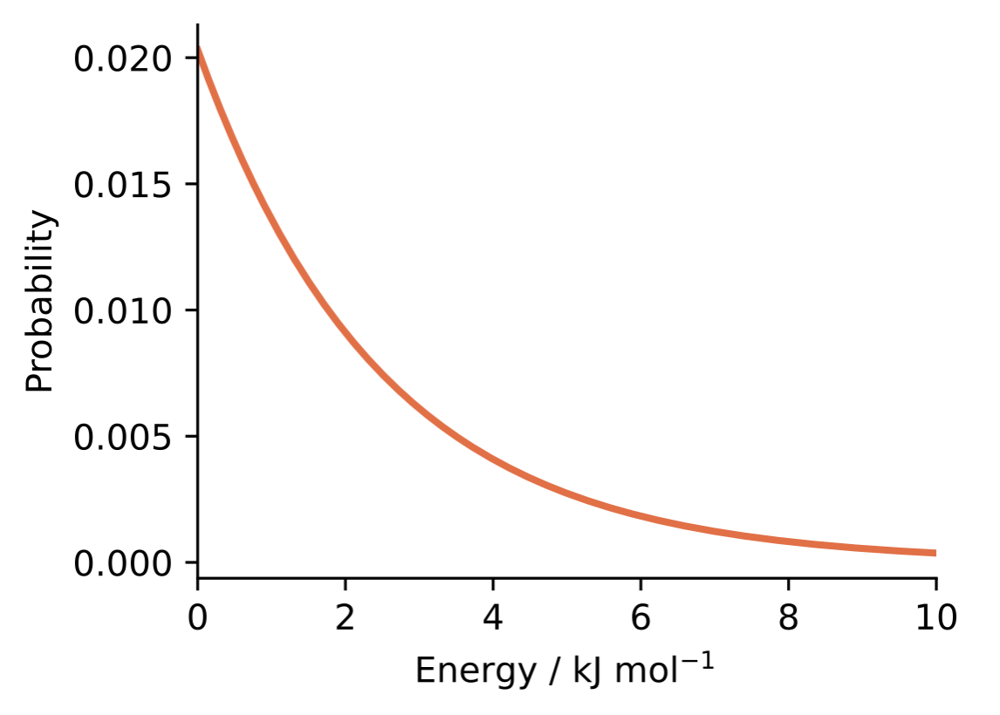
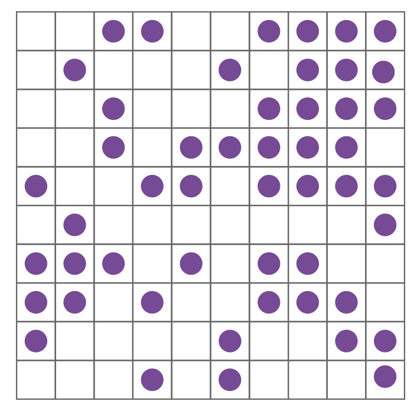
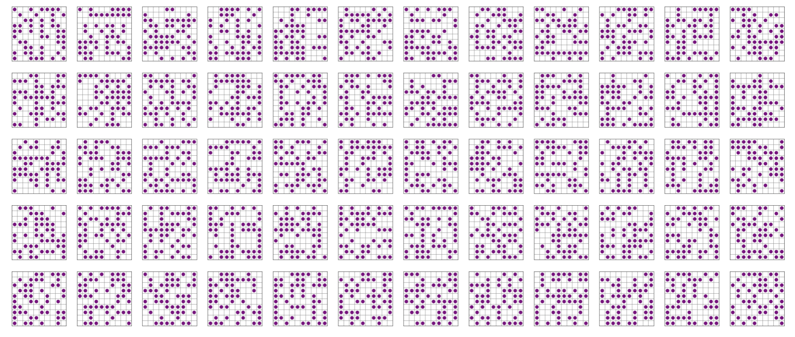
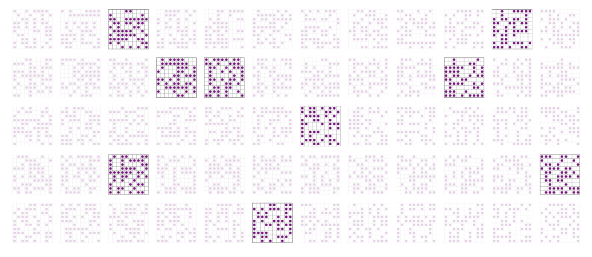
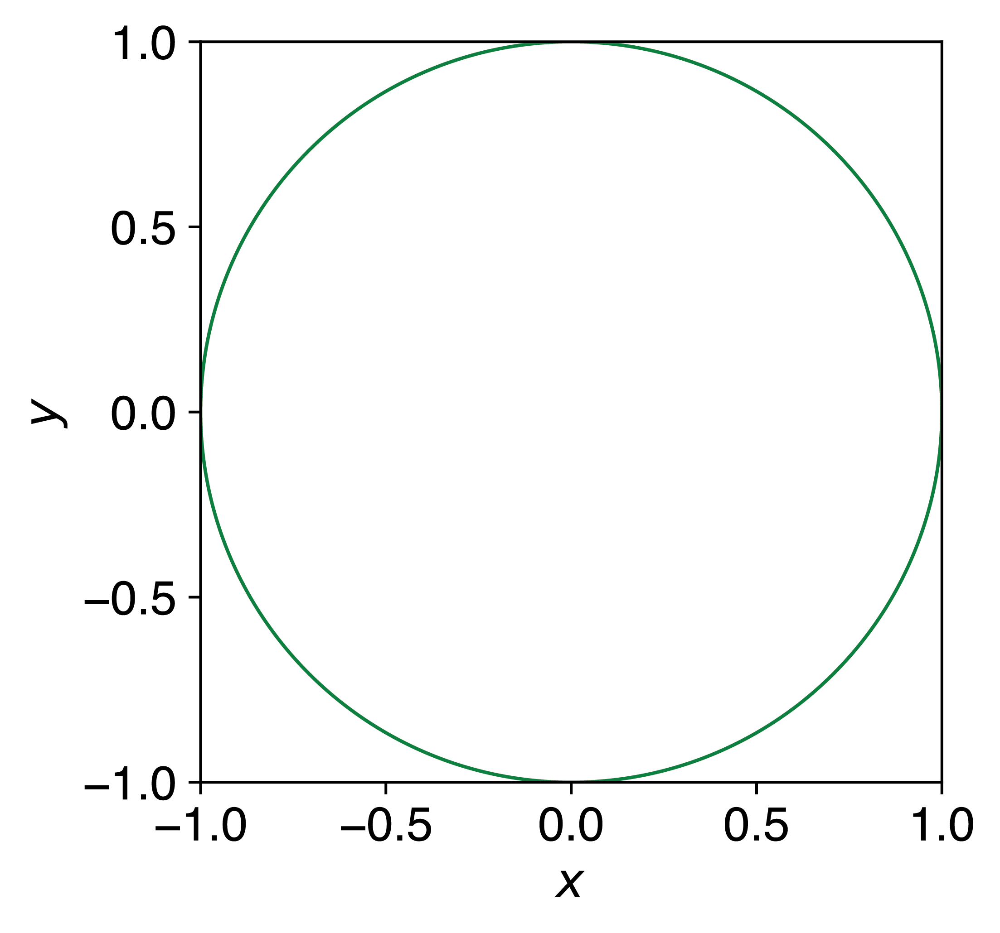
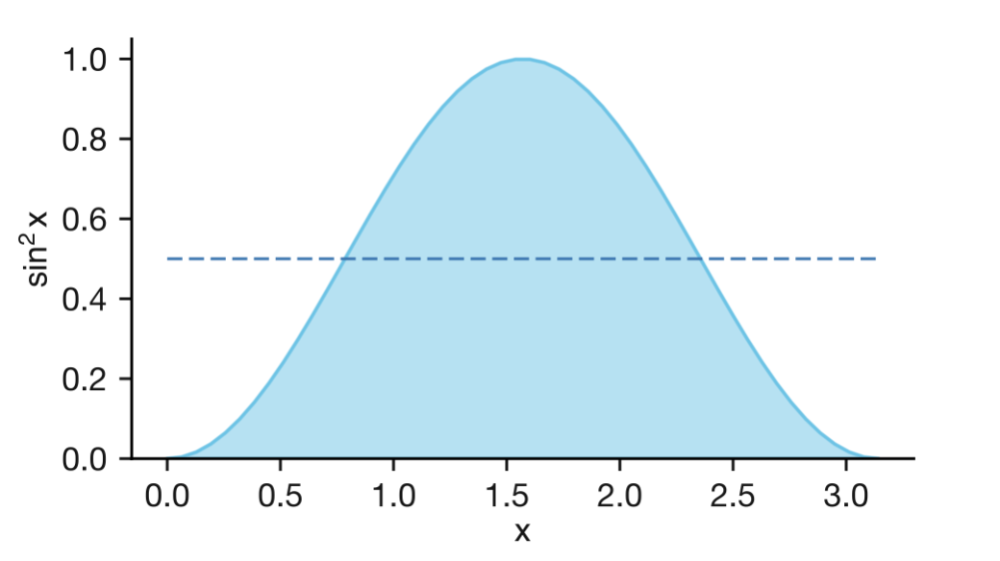
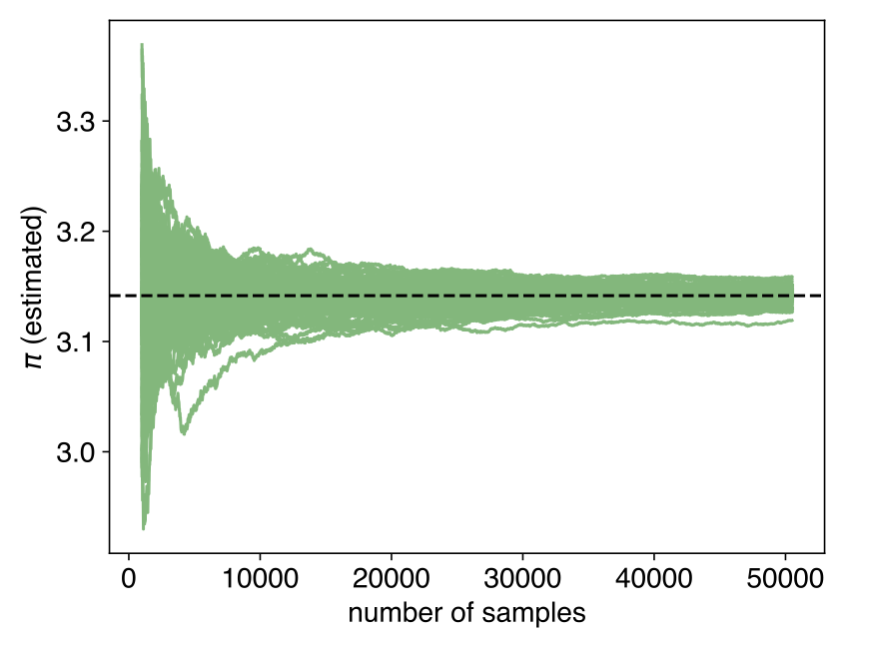

Lecture 1 Introduction to Monte Carlo Methods
1.1 Introduction to Averaging & Sampling
Chemistry is fundamentally a statistical science. Macroscopic properties such as pressure, temperature, and heat capacity emerge from the collective behaviour of approximately \(10^{23}\) atoms or molecules. These observable quantities represent averages over an immense number of microscopic states. A central challenge in computational chemistry is how to accurately estimate these macroscopic properties without having to evaluate every possible molecular arrangement.

Figure 1.1: A macroscopic chemical system contains approximately \(10^{23}\) molecules. Zooming in at different points reveals different molecular arrangements — these are the microscopic configurations whose properties we need to average.
1.1.1 The Statistical Nature of Chemical Systems
When we measure properties of chemical systems in the laboratory, we observe the average behaviour of countless molecules over the duration of our measurement. Even the simplest systems—gases, liquids, or solids—involve enormous numbers of possible arrangements of atoms, with molecules constantly moving, rotating, and vibrating at finite temperatures. To predict these macroscopic measurements, we need to average our property of interest over all possible configurations, weighting each by the probability of it occurring:
\[\begin{equation} \langle A \rangle = \sum A(\mathbf{r}) \times P(\mathbf{r}) \end{equation}\]
Here the angle brackets \(\langle \cdot \rangle\) denote an average value, \(\mathbf{r}\) represents a particular configuration of the system, and \(P(\mathbf{r})\) is the probability of finding the system in that configuration.
1.1.2 Probability Distributions
\(P(\mathbf{r})\) represents a probability distribution, which describes the likelihood of finding the system in each possible configuration. Each probability is a number between 0 (impossible) and 1 (certain).
Probability distributions come in two forms:
Discrete distributions apply when a variable can only take specific, countable values. For these, we use a probability mass function (PMF) that gives the probability of each possible outcome. For example, when rolling a fair six-sided die, each number (1—6) has a probability of 1/6—this is a uniform distribution.
Figure 1.2: A uniform discrete distribution: each face of a fair die has equal probability 1/6.
Not all discrete distributions are uniform: counting heads in four coin flips gives probabilities of 1/16, 4/16, 6/16, 4/16, and 1/16 for 0, 1, 2, 3, and 4 heads respectively, because there are more ways to get 2 heads than 0 or 4.

Figure 1.3: A non-uniform discrete distribution: the number of heads in four coin flips. The middle outcomes are more probable because there are more ways to arrange them.
For any discrete distribution, the sum of probabilities across all possible outcomes must equal 1:
\[\sum_i P(i) = 1\]
Continuous distributions apply when a variable can take any value within a continuous range. These use a probability density function (PDF) where the probability of finding the variable in a specific range equals the area under the PDF curve over that range.

Figure 1.4: The Maxwell–Boltzmann speed distribution, a continuous probability density function. The shaded area gives the probability of finding a molecule with speed between 300 and 500 m s\(^{-1}\): the area under the curve in this range is approximately 0.40.
For continuous distributions, the integral over the entire domain must equal 1:
\[\int_{-\infty}^{\infty} P(x) \, \mathrm{d}x = 1\]
This normalisation requirement—that probabilities sum or integrate to 1—reflects the certainty that the system must exist in some state.
The average (expected value) of any property A is calculated by weighting each possible value by its probability. For discrete distributions:
\[\langle A \rangle = \sum_i A_i P(i)\]
This is exactly the weighted sum we wrote down earlier for chemical systems. For continuous distributions, the equivalent expression is an integral:
\[\langle A \rangle = \int_{-\infty}^{\infty} A(x) P(x) \, \mathrm{d}x\]
1.1.3 The Boltzmann Distribution
In chemical systems, the probability distribution that governs molecular configurations is the Boltzmann distribution:
\[\begin{equation} P(\mathbf{r}) \propto \exp(-U(\mathbf{r})/kT) \end{equation}\]
Here, \(U(\mathbf{r})\) is the potential energy of configuration \(\mathbf{r}\), \(k\) is Boltzmann’s constant, and \(T\) is the temperature.
This relationship reveals a fundamental principle in physical chemistry: lower-energy configurations are exponentially more probable than higher-energy ones. At room temperature (298 K), a configuration that is just 6 kJ/mol higher in energy is approximately 10 times less probable than the minimum energy state, since \(\exp(-6000/(8.314 \times 298)) \approx 1/10\). Temperature determines how strongly the system favours low-energy states—at high temperatures, the distribution becomes more uniform, while at low temperatures, the system is increasingly restricted to the lowest energy states.

Figure 1.5: The Boltzmann distribution at room temperature (298 K). Lower-energy configurations have exponentially higher probability than higher-energy ones.
To create a valid probability distribution, the probabilities must sum to 1:
\[\begin{equation} \sum_i P(\mathbf{r}) = 1 \end{equation}\]
We achieve this by including a normalisation constant, \(Z\):
\[\begin{equation} P(\mathbf{r}) = \frac{\exp(-U(\mathbf{r})/kT)}{Z} \end{equation}\]
This constant \(Z\) is called the “partition function”, defined as:
\[\begin{equation} Z = \sum \exp(-U(\mathbf{r})/kT) \end{equation}\]
1.1.4 The Computational Challenge
To calculate our thermodynamic average directly, we would need to: 1. Generate all possible configurations of our system 2. Compute the property A and energy for each configuration 3. Calculate the weighted sum
The obstacle lies in the sheer number of possible configurations for any realistic chemical system. Consider a simple example: a \(10 \times 10\) array of surface sites where we want to model the adsorption of 50 molecules.

Figure 1.6: A single configuration of 50 molecules adsorbed on a \(10 \times 10\) lattice of surface sites.
This system has approximately \(10^{29}\) possible configurations—more than the number of stars in the observable universe. Direct enumeration becomes impossible.

Figure 1.7: A small selection of the approximately \(10^{29}\) possible configurations of 50 molecules on a \(10 \times 10\) lattice. Direct enumeration of all configurations is computationally intractable.
For most chemical systems, the situation is even more extreme. A small protein in solution might have millions of relevant conformations. A metal catalyst with multiple reaction pathways or a polymer chain sampling different spatial arrangements presents an effectively infinite configuration space. This combinatorial explosion makes direct evaluation computationally intractable.
1.2 The Solution: Statistical Sampling
Instead, we can estimate the sum through sampling—selecting a subset of configurations that represent the full distribution, evaluating our property of interest for these samples, and calculating their average.

Figure 1.8: Rather than evaluating all possible configurations, we select a representative subset (highlighted) and use these to estimate the average.
This concept of sampling is fundamental throughout science and statistics. Consider estimating the average height of people in the UK. Measuring everyone’s height is impractical, but we can measure a representative sample and use that sample’s average as an estimate of the true population average. The key requirement is that our sample must be representative—it should reflect the true probability distribution of the property we’re measuring. For instance, sampling players arriving for a basketball tournament would likely produce a significant overestimate of the average UK height, as basketball players tend to be taller than the general population. In contrast, measuring the heights of people passing by on a street corner on a Saturday afternoon would provide a more representative sample of the UK population.
When we sample directly from the correct probability distribution (for example, by randomly selecting UK citizens with equal probability), we can use simple averaging without additional weighting factors. However, if our sampling method is biased (like measuring only basketball players), we would need to apply appropriate weighting corrections.
This principle applies to chemical systems as well. If we could generate configurations directly according to the Boltzmann distribution, calculating thermodynamic properties would simply require averaging the property values:
\[\begin{equation} \langle A \rangle \approx \frac{1}{N} \sum_{i=1}^{N} A(\mathbf{r}_i) \end{equation}\]
Where the configurations \(\mathbf{r}_i\) are selected with probability proportional to \(\exp(-U(\mathbf{r}_i)/kT)\).
1.3 Two Approaches to Sampling
Two principal methods have been developed to address the sampling challenge in computational chemistry:
1.3.1 Molecular Dynamics Approach
Molecular Dynamics (MD) simulates atomic motion according to Newton’s laws. When performed in the canonical (NVT) ensemble, MD generates trajectories that naturally sample configurations according to their Boltzmann probabilities. When a simulation trajectory visits a suitably representative set of configurations in the relevant regions of configuration space, the time average provides a good approximation of the desired ensemble average:
\[\begin{equation} \langle A \rangle \approx \frac{1}{M} \sum_{i=1}^{M} A(\mathbf{r}_i) \end{equation}\]
Where \(M\) is the number of time steps.
However, the effectiveness of MD sampling depends on the system’s energy landscape. Consider a protein folding example: if high energy barriers separate different conformational states, the protein may remain trapped in one conformation for the entire simulation duration. The resulting time average would reflect only a small subset of the relevant configuration space, not the true equilibrium ensemble.
Timescales present another challenge. Many important chemical processes occur on microsecond to second timescales, while individual MD time steps typically represent femtoseconds. This creates a fundamental gap between simulation capability and the time needed to observe certain phenomena. For instance, studying a slow conformational change or a rare reaction event may require prohibitively long simulation times.
Additionally, some systems inherently resist treatment via continuous dynamics. Lattice models with discrete site occupancies, magnetic materials with fixed spin orientations, or any problem where variables can only take discrete values often require different sampling approaches altogether.
1.3.2 Monte Carlo Approach
Monte Carlo (MC) methods use random numbers to estimate quantities that would be impractical or impossible to calculate exactly. The name comes from the Monte Carlo quarter of Monaco, reflecting the central role of chance in the method. The approach was developed in the late 1940s by Stanislaw Ulam and John von Neumann at Los Alamos National Laboratory, initially to model neutron diffusion in nuclear weapons. Nicholas Metropolis, who helped implement the early calculations on the MANIAC computer, suggested the casino-inspired name. Within a few years, Metropolis and collaborators had extended the method to statistical mechanics, publishing the landmark 1953 paper that introduced what we now call the Metropolis algorithm.
The core idea is to replace an intractable exact calculation—such as summing over \(10^{29}\) configurations—with a statistical estimate based on a manageable random sample. In its simplest form, Monte Carlo sampling involves generating configurations using random numbers, evaluating the property of interest for each configuration, and computing the average of these values.
1.4 Fundamental Monte Carlo Examples
Before addressing the sampling challenges in chemical systems, let’s examine two classic examples that illustrate the power of Monte Carlo methods with uniform sampling. These examples demonstrate the core principles using simple problems where each possible outcome has an equal probability of occurring.
1.4.1 Estimating π by Monte Carlo Integration
One of the simplest demonstrations of Monte Carlo methods is estimating the value of \(\pi\). Consider a circle with radius 1 inscribed inside a square with side length 2. The area of the circle is \(\pi\), while the area of the square is 4. Therefore, the ratio of these areas is \(\pi/4\).

Figure 1.9: A circle of radius 1 inscribed inside a square of side length 2. The ratio of the circle’s area to the square’s area is \(\pi/4\).
We can estimate this ratio by randomly placing points within the square and counting what fraction fall inside the circle. The procedure involves generating \(N\) random points with coordinates \((x,y)\), where \(x\) and \(y\) are uniformly distributed between −1 and 1. We then count how many points \(M\) satisfy \(x^2 + y^2 \leq 1\), which indicates they fall within the circle. The estimate for \(\pi\) is given by: \(\pi \approx 4 \times M/N\).

Figure 1.10: Estimating \(\pi\) by Monte Carlo sampling. Random points are generated uniformly within a square of side length 2. Points falling inside the inscribed unit circle (red) and outside (blue) are counted, and \(\pi\) is estimated from the ratio \(4 \times M/N\). As the number of samples increases, the estimate converges towards the true value of \(\pi\).
This approach demonstrates how random sampling can solve a deterministic problem.
1.4.2 Function Averaging and Numerical Integration
Our second example involves calculating the average value of a function over a specific interval. Consider finding the average value of \(\sin^2(x)\) over the interval \([0,\pi]\).
Mathematically, this average is defined as:
\[\begin{equation} \text{Average value} = \frac{1}{\pi} \times \int_0^{\pi} \sin^2(x) dx \end{equation}\]
The analytical solution to this integral is 1/2.

Figure 1.11: The function \(\sin^2(x)\) over \([0, \pi]\) (solid curve), with the shaded area representing the integral. The dashed line shows the exact average value of 1/2.
Using Monte Carlo methods, we can estimate this average by generating uniform random \(x\)-values between 0 and \(\pi\), calculating \(\sin^2(x)\) for each point, and then averaging these results. For example, suppose we generate five random values: \(x = 0.50, 1.20, 2.10, 0.85, 2.70\). Evaluating \(\sin^2(x)\) for each gives \(0.230, 0.869, 0.745, 0.564, 0.183\), with an average of \(0.518\)—already close to the exact value of \(0.500\) with just five samples.
This procedure can be generalised to estimate any definite integral:
\[\begin{equation} \int_a^b f(x) dx \approx (b-a) \times \frac{1}{N} \sum_{i=1}^{N} f(x_i) \end{equation}\]
Where \(x_1\), \(x_2\), …, \(x_n\) are uniform random numbers between \(a\) and \(b\). The factor \((b-a)\) converts the average value of \(f(x)\) into the area under the curve: the integral equals the average height of the function multiplied by the width of the interval.
The strength of this approach becomes apparent when dealing with multi-dimensional integrals, where traditional numerical methods become exponentially more expensive as dimensionality increases.
1.5 Statistical Uncertainty in Monte Carlo Methods
Unlike deterministic methods, which give the same answer every time, Monte Carlo methods produce slightly different results each time we run them with a different sequence of random numbers. We must therefore treat Monte Carlo results as estimates with associated uncertainty.
The precision of these estimates improves as we increase the number of samples. Statistical uncertainty decreases proportionally to \(1/\sqrt{N}\), where \(N\) is the number of random samples. To reduce the uncertainty by half, we need to use four times as many samples. This scaling behaviour is characteristic of random sampling methods and remains independent of the dimensionality of the problem—a significant advantage in high-dimensional applications.

Figure 1.12: Convergence of Monte Carlo estimates of \(\pi\). Each green trace represents an independent simulation. As the number of samples increases, all estimates converge towards the true value (dashed line), with the spread of estimates narrowing as \(1/\sqrt{N}\).
When reporting Monte Carlo results, always include the associated uncertainties alongside the estimated values.
1.6 Summary and Preview
1.6.1 Key Takeaways from Lecture 1
Monte Carlo methods use random sampling to estimate quantities that would be intractable to calculate exactly. In this lecture we saw how uniform random sampling can estimate \(\pi\) (by counting points inside a circle) and evaluate definite integrals (by averaging function values at random points). These estimates carry statistical uncertainty that decreases as \(1/\sqrt{N}\), so more samples give more precise results.
All of these examples used uniform sampling—each point was equally likely. For chemical systems, where configurations follow the Boltzmann distribution, we need a way to sample non-uniformly.